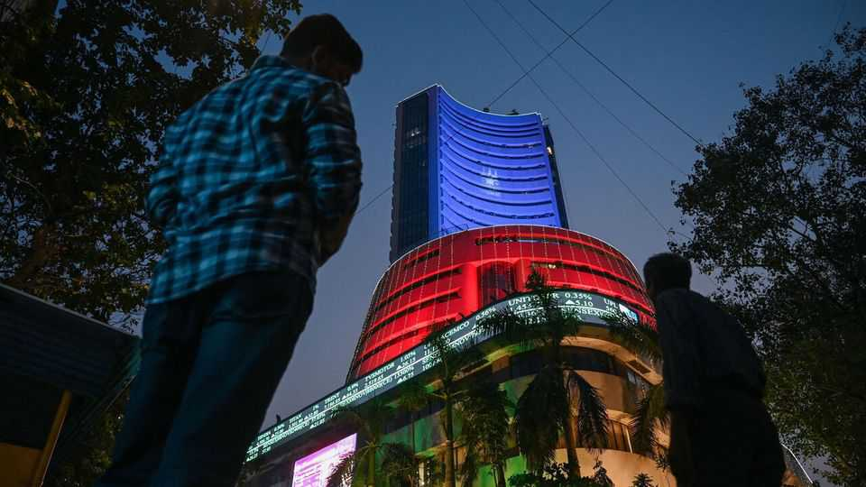
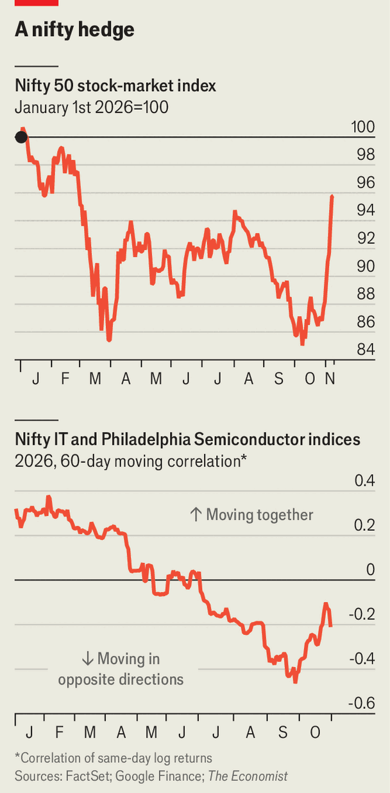

Where to find the anti-AI trade
The worse chipmakers do, the better Indian equities perform

Nov 12th 2026
MOST OF THE world’s traders were still enjoying a weekend break on Sunday November 8th after a rough few days in the markets—except those in Mumbai, India’s financial capital. Its two big bourses opened for a 70-minute special session to mark Diwali, the festival of lights, and to welcome Lakshmi, the goddess of wealth. Trades made during this so-called Muhurat session are meant to be particularly auspicious. Investors are supposed to make long-term purchases: buying gold and silver is common as are conviction bets for the sake of the grandchildren.
Investors in India had plenty of reason to be optimistic. The Nifty 50, a benchmark, has risen by more than a tenth over the past month, becoming the best-performing stock-market index in Asia. In the week running up to Diwali, it stood out in a sea of red as investors elsewhere feared that an AI bubble had finally burst. The index rose by 2.4% on November 5th as the NASDAQ fell by 5.5%. The rally even extended to the rupee, which on November 6th reached its highest level since April.
Indian equities have largely sat out the AI boom. Investors saw the country as a victim of disruption rather than a disruptor itself. In February 2026 the market plunged after the launch of Claude Code, an AI tool. A viral note from Citrini Research, a firm of analysts, added to the gloom, concocting a scenario in which India seeks an IMF bail-out in 2028 as its coding industry falters. India earns about 10% of its GDP from services exports. (Predictions of doom are still far from being borne out: employment in IT has grown and total Indian services exports are up by 8.7% so far this fiscal year.)

Now that investors are re-evaluating AI’s prospects, India has gained. Since May India’s tech stocks have traded in the opposite direction to AI hardware stocks (see chart). As investors have become concerned about overexposure to AI hardware (memory chips and the like), they have rotated to AI wetware, the coders who use the tools. The Nifty IT index, which includes consultancies such as Infosys and Wipro, has risen by 28% since July, having previously fallen by 36%. The seesawing is mostly about sentiment, points out Anmol Garg, of DAM Capital, an investment bank. Excessive pessimism about Indian IT companies was the counterpart of excessive optimism about chipmakers. Both excesses are now subsiding.
Foreign investors have rushed back to India after a long absence. On November 5th Indian equities received $1.6bn of foreign inflows in a single day, the most since February 2021. It was also a reversal of the year-long trend: $30bn has left India in the first ten months of 2026. It is not only AI that is tempting investors back. Valuations look more attractive, says Shibani Kurian of Kotak Mutual Fund: earnings have been growing at a “robust clip”. By the end of October the Nifty 50 was trading at close to its cheapest ratio of price to earnings for a decade.
There are other auspicious developments. Indian assets have benefited from lower oil prices. The country imports about 90% of its oil, historically from the Gulf. As investors bet that a humbled Donald Trump would seek a deal with Iran to stabilise the oil market, the rupee rallied and the yield on government bonds fell. There has also been encouraging chatter that the government may remove long-term capital-gains taxes from foreigners.
Sadly the 70 minutes of Sunday trading ended in anti-climax: the market finished slightly down, for the first time in nine years. AI stocks rallied the next day and Indian stocks largely missed out on the exuberance. Those holding on to shares for their grandchildren should not mind too much. There is plenty of time for Lakshmi to do her thing. ■